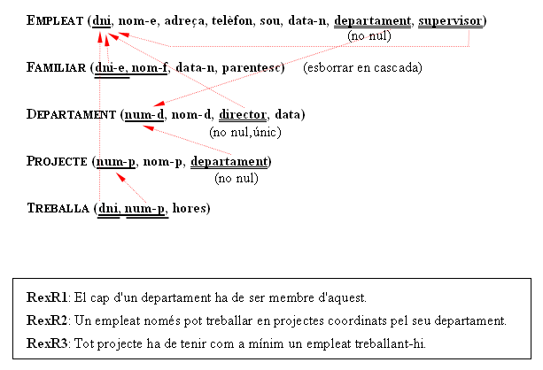

Bases de Dades
Part I: Pràctica inicial
Aquesta pràctica té la voluntat de servir de repàs del tutorial de Base. Seran una sèrie de exercicis sobre una mateixa Base de Dades, la corresponent a l'exemple amb què s'il·lustra el Tema 2: Model Entitat-Relació. Repetim ací la breu anàlisi de requisits de l' Empresa:
- La companyia està organitzada en departaments. Cadascun té nom únic, número únic i un empleat que el dirigeix. Ens interessa la data en la qual va començar a dirigir-lo.
- Cada departament controla una sèrie de projectes. Cadascun d'aquestos projectes té nom i número únics, i estarà coordinat per un únic departament.
- De cada empleat ens interessa el nom (format per dos cognoms i nom de pila), DNI, adreça, telèfon, sou i data de naixement. Tot empleat està assignat a un departament, i moltes vegades tindrà un supervisor. Pot treballar en més d'un projecte (no necessàriament controlats pel mateix departament) i treballarà un determinat número d'hores a la setmana en cada projecte. En un projecte sempre treballarà, com a mínim, un empleat.
- Volem saber també els familiars de cada empleat, per administrar els termes dels segurs. Volem saber el nom, data de naixement i parentesc amb l'empleat.
L'estructura de les taules és la següent:

Llicenciat sota la Llicència Creative Commons Reconeixement NoComercial SenseObraDerivada 2.5